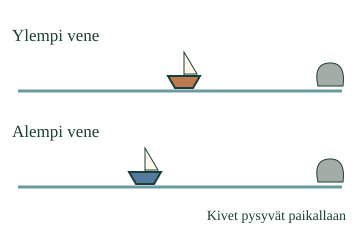

<link rel="stylesheet" href="lesson.css">


<section data-teaching-step="1" data-lesson-role="teaching-step">
<p class="lesson-intro"> Aava tarkkailee kahta paperivenettä.</p>
<h2>Liikkuiko ja mikä muuttui?</h2><p><strong>Yhdistän havainnot liikkeestä ja sen muutoksesta.</strong></p>
<p>Toista tapahtuma alusta loppuun. Vertaa kumpaakin venettä oman kaistansa kiveen. Kerro sitten, liikkuiko vene ja miten tapahtuma eteni.</p>
</section>


<section data-teaching-step="2" data-lesson-role="teaching-step">
<div data-motion-integrate id="mallin-ohjaus" data-lesson-context-source="workbench"><p>Ilman liikkuvaa kuvaa: siirrä kahta esinettä pöydällä kiinteän merkin vieressä. Anna toisen jatkaa ja pysäytä toinen. Kuvaa molempien koko tapahtuma.</p></div>
</section>


<section data-teaching-step="3" data-lesson-role="teaching-step">
<h3>Jatkoi vai pysähtyi?</h3><p>Ensimmäisessä mallissa ylempi vene liikkuu koko ajan. Alempi liikkuu ensin ja pysähtyy. Molemmat siis liikkuivat, mutta vain alemman liike muuttui.</p>
<figure data-lesson-role="worked-example"><figcaption>Loppukuva muistuttaa katsotusta tapahtumasta. Liikkeen muutos näkyy toistossa.</figcaption></figure>
</section>


<section data-teaching-step="4" data-lesson-role="teaching-step">
<h3>Takaisin alkuun</h3><p>Tapahtumassa <strong>Tapahtuma B</strong> ylempi käy kauempana ja palaa. Se liikkui, vaikka alku- ja loppupaikka ovat samat. Alempi pysyy paikallaan.</p><p>Tutki tapahtumaa B tässä vaiheessa. Voit käynnistää, pysäyttää tai edetä mallissa oman havaintosi mukaan.</p>

<details data-lesson-role="worked-example" data-lesson-context="motion-return" data-context-source="workbench" data-context-preset="return" data-context-reveal="model"><summary>Tutki tapahtumaa B tässä</summary><p data-context-fallback>Malli on ilman JavaScriptiä alkuperäisessä kohdassaan: <a href="#mallin-ohjaus">avaa mallin kohta</a>.</p><div data-context-slot></div><button type="button" data-context-close hidden>Sulje malli</button></details>
</section>


<section data-teaching-step="5" data-lesson-role="teaching-step">
<p data-lesson-role="question"><strong>Mieti:</strong> riittääkö pelkkä loppukuva kertomaan, mitä tapahtui?</p>
<details data-lesson-role="hint"><summary>Apua</summary><p>Katso ensin ylempää, sitten alempaa venettä. Saat pysäyttää ja toistaa. Lähtöpaikkojen apuviivat eivät muuta tapahtumaa. Puhetta tai erillistä esineen nimeämistä ei tarvitse vahvistaa.</p></details>
</section>


<section data-teaching-step="6" data-lesson-role="teaching-step">
<details data-lesson-role="teaching-step"><summary>Kokeile uudessa tilanteessa</summary><p>Seuraa alun odotusta ja sen jälkeistä liikettä. Liitä havainnot saman veneen kohdalle.</p><p>Tutki tapahtumaa D tässä vaiheessa. Seuraa saman veneen odotusta ja liikettä.</p><p>Mallissa <strong>Tapahtuma C</strong> toinen etenee samassa ajassa pidemmälle. Kumpikaan ei silti muuta omaa tapaansa liikkua. Eri vauhti ei yksin tarkoita liikkeen muutosta.</p>
<details data-lesson-role="worked-example" data-lesson-context="motion-start" data-context-source="workbench" data-context-preset="start" data-context-reveal="model"><summary>Tutki tapahtumaa D tässä</summary><p data-context-fallback>Malli on ilman JavaScriptiä alkuperäisessä kohdassaan: <a href="#mallin-ohjaus">avaa mallin kohta</a>.</p><div data-context-slot></div><button type="button" data-context-close hidden>Sulje malli</button></details>
</details>
</section>


<details data-lesson-role="teacher-note"><summary>Aikuiselle ja ilman ruutua</summary><p>Vuosiluokat1–2. Kanoninen integraatiorooli yhdistää ENV-PHY-MOTION-OBS-01 ja ENV-PHY-MOTION-CHANGE-01 samassa tapauksessa. Molemmat vaaditaan samassa JA-ryhmässä. Kyse ei ole kahdesta erillisestä tunnistuskokeesta tai uudesta formaalista hallintamoottorista. Nopeuden laskua tai kellotaulua ei oleteta.</p><p>Toisto näyttää samanaikaiset liikkeet yhteisellä ajalla ja kiinteillä vertailukivillä. Aika0–6 on kuvan malliaika, eikä välimatkoja esitetä metreinä. Pysäytä pysäyttää katsomisen, ei lisää malliin veneen pysähtymistä. Askel etenee puoli malliajan yksikköä. Ei automaattista käynnistystä, pakollista katseluporttia tai tallennusta. Havainnot koskevat koko tapahtumaa, joten uudelleenkatselu ja apuviivat säilyttävät muuten pätevän palautteen.</p><p>Liikeradat on annettu malliin. Niistä ei päätellä tuulta, työntöä tai muuta syytä. Offline: aikuinen liikuttaa turvallisia leluja kiinteän merkin vieressä. Lapsi voi osoittaa tai kertoa tapahtuman. Ruutuvastaus ei osoita itsenäistä fyysistä havainnointia, säilyvää osaamista tai oppimisvaikutusta.</p></details>


<section data-teaching-step="7" data-lesson-role="teaching-step">
<p data-lesson-role="question"><strong>Lopuksi:</strong> miten vene voi olla lopussa alkuperäisellä paikallaan ja silti liikkunut?</p>
</section>


